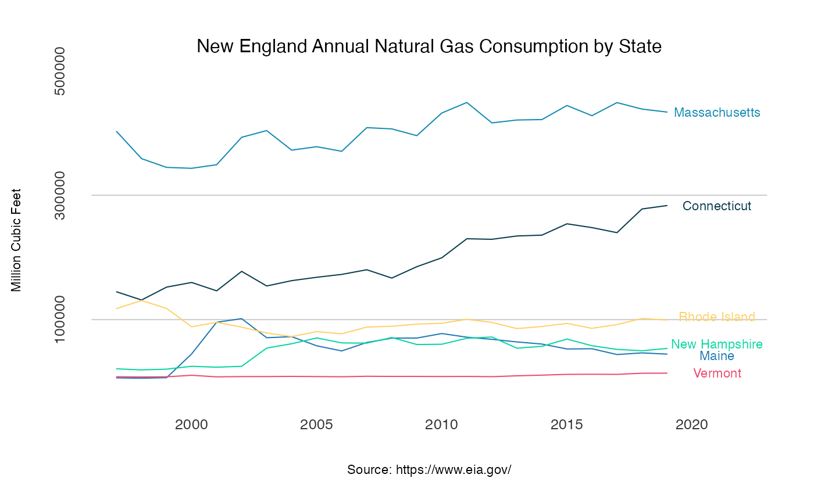

The dataset provides information on the US annual natural gas consumption by state level between 1997 and 2019, and aggregate level between 1949 and 2019
Units: Million Cubic Feet
us_total
A data.frame with 3 variables.
An integer, the year of the observation
A character, the US state indicator
A numeric, the yearly total natural gas consumption in a million cubic feet by state or US aggregate
US Energy Information Administration (EIA) website.
The dataset contains a summary of the total annual demand for natural gas in the US by state and total aggregate level. The data is available for the state level between 1997 and 2019, and for the US level between 1949 and 2019.
data("us_total") # Subsetting the total consumption in the US us_agg <- us_total[which(us_total$state == "U.S."),] us_agg <- us_agg[order(us_agg$year), ] head(us_agg)#> year state y #> 1034 1949 U.S. 4971152 #> 1035 1950 U.S. 5766542 #> 1036 1951 U.S. 6810162 #> 1037 1952 U.S. 7294320 #> 1038 1953 U.S. 7639270 #> 1039 1954 U.S. 8048504at_x <- seq(from = 1950, to = 2020, by = 10) at_y <- pretty(us_agg$y)[c(3, 5, 7)] plot(us_agg$year, us_agg$y, col = "#1f77b4", type = "l", frame.plot = FALSE, axes = FALSE, panel.first = abline(h = at_y, col = "grey80"), main = "US Total Natural Gas Consumption", xlab = "Source: https://www.eia.gov/", ylab = "Million Cubic Feet")mtext(side =2, text = format(at_y, scientific = FALSE), at = at_y, col = "grey20", line = 1, cex = 0.8)### Plotting the annual consumption in New England states # Subsetting the New England states ne <- c("Connecticut", "Maine", "Massachusetts", "New Hampshire", "Rhode Island", "Vermont") ne_gas <- us_total[which(us_total$state %in% ne),] # Reshape to wide ne_wide <- reshape(ne_gas, v.names = "y", idvar = "year", timevar = "state", direction = "wide") names(ne_wide) <- c("year",ne) # Reorder the data ne_wide <- ne_wide[order(ne_wide$year), ] # Set the plot y and x axis ticks at_x <- seq(from = 2000, to = 2020, by = 5) at_y <- pretty(ne_gas$y)[c(2, 4, 6)] # plot the first series plot(ne_wide$year, ne_wide$Connecticut, type = "l", col = "#073b4c", frame.plot = FALSE, axes = FALSE, panel.first = abline(h = c(at_y), col = "grey80"), main = "New England Annual Natural Gas Consumption by State", cex.main = 1, font.main = 1, col.main = "black", xlab = "Source: https://www.eia.gov/", font.axis = 1, cex.lab= 0.7, ylab = "Million Cubic Feet", ylim = c(min(ne_gas$y, na.rm = TRUE), max(ne_gas$y, na.rm = TRUE)), xlim = c(min(ne_gas$year), max(ne_gas$year) + 3))# Add the y and x axis ticks mtext(side =1, text = format(at_x, nsmall=0), at = at_x, col = "grey20", line = 1, cex = 0.8)mtext(side =2, text = format(at_y, scientific = FALSE), at = at_y, col = "grey20", line = 1, cex = 0.8)text(max(ne_wide$year) + 2, tail(ne_wide$Massachusetts,1), "Massachusetts", col = "#118ab2", cex = 0.7)text(max(ne_wide$year) + 2, tail(ne_wide$`New Hampshire`,1) * 1.1, "New Hampshire", col = "#06d6a0", cex = 0.7)text(max(ne_wide$year) + 2, tail(ne_wide$`Rhode Island`,1) * 1.05, "Rhode Island", col = "#ffd166", cex = 0.7)